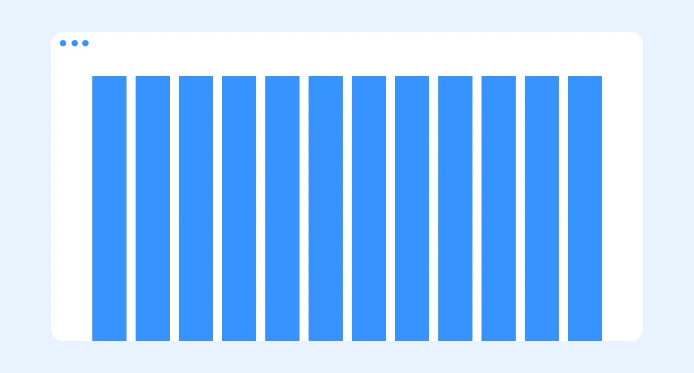
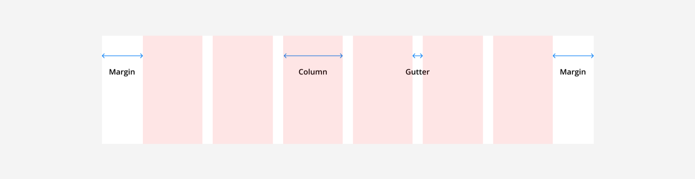
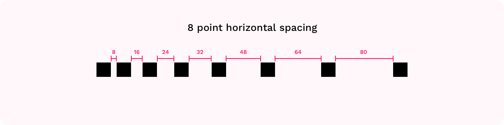
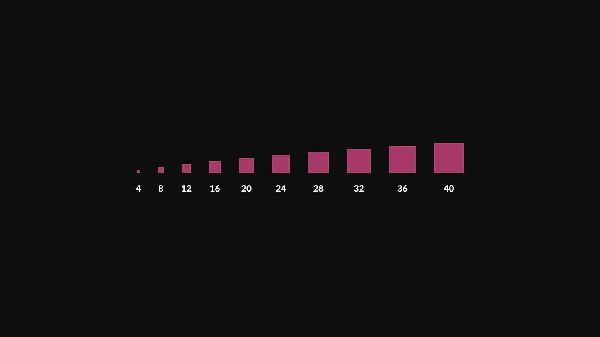

Where grids came from, how column grids work on screens, and why designers measure in multiples of 8.
Use the arrow keys, space or click to move through the slides. Press F for full screen and Esc to come back here.
The invisible structure behind every clean layout.
Grids give a layout structure, and give developers a framework to build it the same way on every device.
Content snaps to columns, so the same design can reflow from desktop to tablet to phone.
A common pattern: 12 columns on desktop, 8 on tablet, 4 on mobile.


Use multiples of 8 for every size, padding, margin and gap: 8, 16, 24, 32, 40, 48…
Use 4 for the smallest adjustments, such as icon padding.

Save your scale as number variables in Figma (space-8, space-16, space-24…) and use them everywhere.
space-8
space-16
space-24
